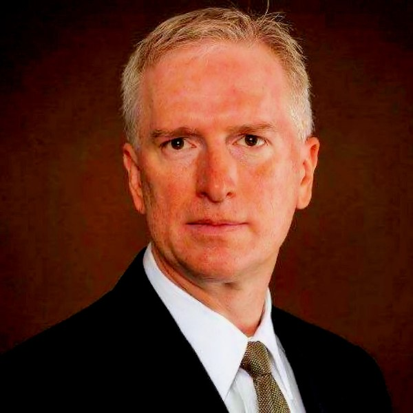

Todd Bloom
Tax attorney and CPA; WSBA Board of Governors, District 6
- Seat
- Position 7 — Stephens seat — challenging Stephens
- Appointing authority
- Not applicable. Challenger, not a sitting judge.
- Background
- 20+ years as a tax attorney, CPA, CFA, and CFP advising high-net-worth families, executives of publicly traded companies, and privately held businesses. Prior decade as Big Four senior manager (tax) and in-house counsel/controller for a financial services firm. U.S. Tax Court bar. Retired Navy LCDR (Reserve, 2018), recalled to active duty after 9/11. Former FINRA arbitrator. Adjunct faculty teaching tax courses.
- Reported endorsements
- None publicly identified for the 2026 race. The Washington State Republican Party is not listing him among recommended candidates, though it has backed Stevens and Larson elsewhere. No bar, union, or elected-official endorsements located.
- Fundraising
- No filing yet as of May 8, 2026
What the record actually shows
Facts pulled from public sources: who appointed them, what they did before, what they've said or written, who's backing them. We're not predicting any vote. Why these categories?
-
Professional client base
Entire 20-year practice has been built advising high-net-worth families and privately held businesses on tax minimization. Those are exactly the clients who lose if Culliton is overturned and Washington adopts a graduated income tax. UW LL.M. in taxation. U.S. Tax Court bar. A vote to scrap Culliton would be professionally and reputationally incongruous with the entire arc of his career.
-
Explicit prior tax record
His 2016 Vote Smart survey, run during his first congressional bid, supported decreasing income taxes at every bracket, greatly decreasing small business taxes, eliminating inheritance taxes, and explicitly opposing income tax increases. His own words: 'Tax rates DO affect economic activity.' That is the most direct anti-income-tax record any 2026 Supreme Court candidate has put in writing.
-
Republican partisan history
Twice the Republican nominee for U.S. House in WA-6 (2016 general, 2022 primary). Self-described 'fiscal conservative' calling for tax cuts to stimulate growth. The WAGOP is firmly on the anti-income-tax side of the 2026 fight. He has run in two cycles under their banner.
-
Who he is challenging
He filed against Chief Justice Stephens, the author of the 7-2 Quinn v. State majority that upheld the capital gains tax as an excise. Challenging her at all is itself a directional signal.
How this candidate is likely to rule, and why.
Todd Bloom is the candidate with the cleanest paper trail in the entire field. He is a tax attorney with a UW LL.M. in taxation whose 20-year practice has been built on advising high-net-worth families and closely held businesses on tax structure. He represents clients before the IRS and state taxing authorities.
His professional identity and his client base are exactly the constituency that would lose if Culliton were overturned and Washington adopted a graduated income tax. On top of that career, he has an explicit prior record.
His 2016 Vote Smart survey, completed during his first run for Congress, supported decreasing income taxes at every bracket, greatly decreasing small business taxes, eliminating inheritance taxes, and explicitly opposing income tax increases. His own quote: 'Tax rates DO affect economic activity.' He has twice been a Republican nominee for U.S.
House (2016 general, 2022 primary), running as a 'fiscal conservative' calling for tax cuts to stimulate growth. He is also the only 2026 challenger who has chosen to run directly against the sitting Chief Justice who wrote the Quinn v. State majority upholding the capital gains tax. Challenging Stephens at all is a directional signal.
He has not, of course, said outright 'I would vote to overturn Culliton.' Judicial canons do not permit that. But the convergence of professional identity, written tax record, partisan history, and the specific choice of opponent is as close to overdetermined as a judicial lean can be. The only caveat is fundraising.
He raised $2,539 for his 2024 campaign and $0 so far for 2026. He is running on a minimal infrastructure that may never gain traction. A high-confidence keep lean does not translate to a high probability of winning.
It is a confidence about how he would vote if seated, not a prediction about whether he gets seated.
-
He is challenging Stephens, not Melody or Diaz
There were five Supreme Court positions on the 2026 ballot. He chose to run against the Chief Justice who authored Quinn. That is itself an ideological alignment statement.
-
The 2024 reset
He ran for Position 2 in 2024 and finished third at 16.9% with $2,539 raised. He is back for 2026 with no apparent fundraising and no website. That is the profile of an ideological candidate, not a strategic one.
-
WSBA Board service
He is a sitting District 6 Governor on the WSBA Board, re-elected through 2029. That gives him a professional standing the typical pro se challenger lacks, but the WSBA Board is non-political and does not signal an income tax position.
-
Textualist self-description
His Ballotpedia statement leans on 'a deep and abiding respect and reverence for our constitution.' That is the standard textualist or originalist framing. Applied to Article VII, that approach maps cleanly onto preserving Culliton, since the 1933 court reached its result by reading 'property' literally.
An analytical read on public signals. Not a prediction of any individual vote.
Questions a voter might ask this candidate
- Will any organized conservative legal or anti-tax group surface to fund him, given his $0 PDC report?
- Does his constitutional textualism extend to other Article VII cases beyond Culliton, like the 1% property tax cap?
- Why a third Supreme Court bid after a 16.9% finish in 2024 and a $2,500 budget?
Phrased to comply with Washington's Code of Judicial Conduct, which prohibits candidates from pledging votes on specific cases or issues likely to come before the court. Methodology questions are permitted.
Sources
- Glein Bloom Accounting and Tax — About
- Ballotpedia — Todd Bloom
- Vote Smart — Political Courage Test (2016)
- WSBA Board of Governors — District 6
- WA Secretary of State — 2024 Position 2 results
- Cascade PBS — Four candidates for Position 2 (2024)
- Ballotpedia — WA-6 2016
- Ballotpedia — WA-6 2022
- PDC — 2026 candidates browser
- The Daily World — WA Supreme Court races (May 12, 2026)
- Are you Todd Bloom or their campaign? Submit a response →